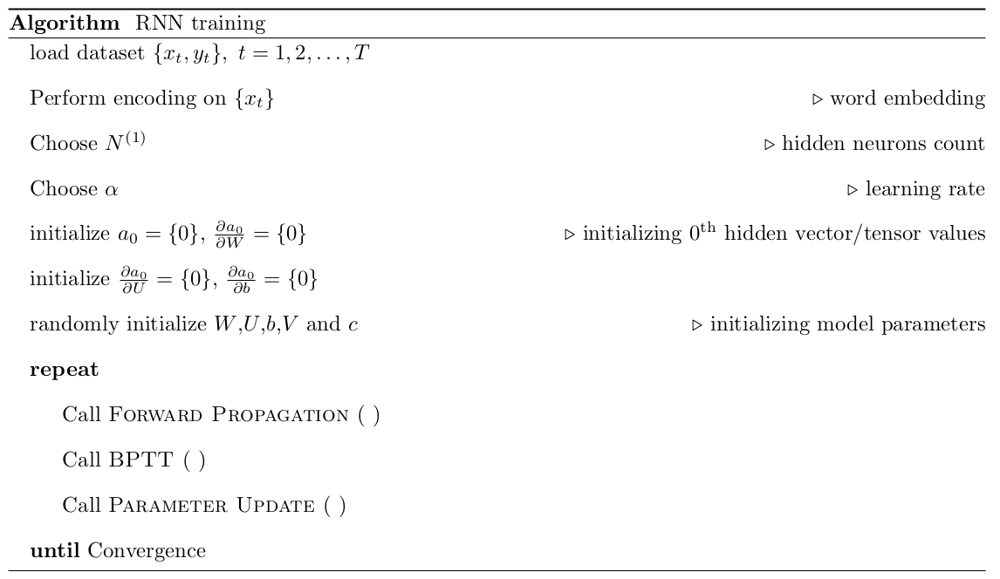
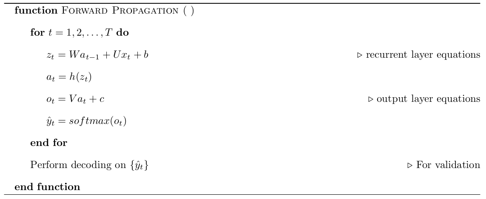
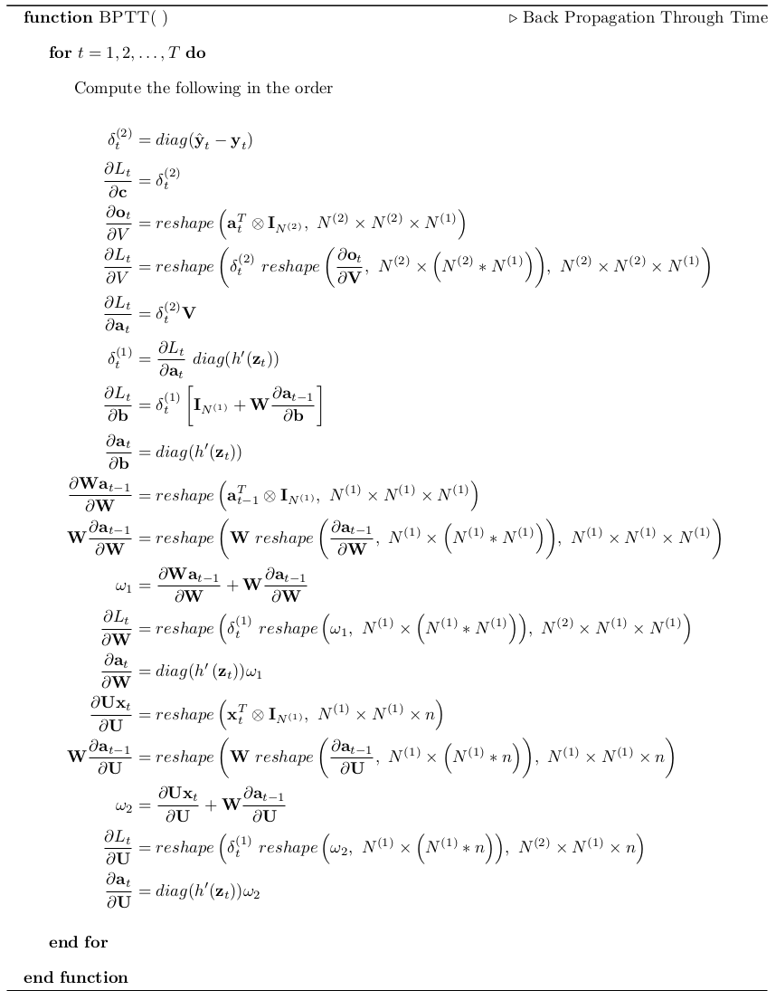
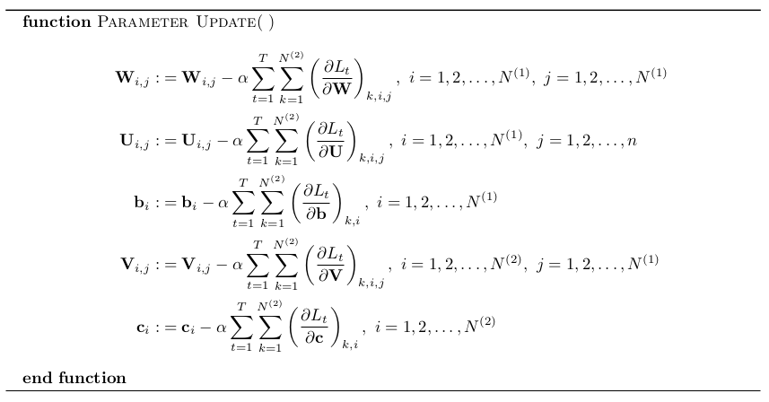

4 Updating parameters and RNN training
In the last section, we have derived the loss gradients for all model parameters. It can be noted that the loss gradients have an extra dimension than its corresponding model parameters.
\[ \renewcommand{\bm}[1]{\textbf{#1}} \renewcommand{\der}[2]{\frac{\partial #1}{\partial #2}} \]
For example,
the dimension of \(\der{L_t}{\bm{U}}\) is \(\left(N^{(2)}\times
N^{(1)}\times n\right)\) whereas the dimension of \(\bm{U}\) is \(\left(N^{(1)}\times n\right)\).
This leading dimension \(N^{(2)}\) indicates the number of components in the final output vector. Thus, every parameter has a loss gradient derived from every output vector component. So, the loss gradients will be summed on the first axis (loss axis) to accumulate the update from all loss components and then used to update the parameters.
Hence, the update from each loss component will be accumulated by adding the loss gradients on the first axis and then used to update the parameters.
4.1 Updating parameters
The parameters update equations are given below. The summation is performed on the loss axis direction.
\[ \begin{align} \bm{c}_i :&= \left. \bm{c}_i - \alpha \sum_{t=1}^{N^{(2)}} \sum_{k=1}^{N^{(2)}} \der{L_t}{\bm{c}}\right|_{k,i}, \ \ i=1,2,\dots,N^{(2)} \\ \bm{V}_{i,j} :&= \left. \bm{V}_{i,j} - \alpha \sum_{t=1}^{N^{(2)}}\sum_{k=1}^{N^{(2)}} \der{L_t}{\bm{V}}\right|_{k,i,j}, \ \ i=1,2,\dots,N^{(2)}, \ \ j=1,2,\dots,N^{(1)} \\ \bm{b}_i :&= \left. \bm{b}_i - \alpha \sum_{t=1}^{N^{(2)}}\sum_{k=1}^{N^{(2)}} \der{L_t}{\bm{b}}\right|_{k,i}, \ \ i=1,2,\dots,N^{(1)} \\ \bm{W}_{i,j} :&= \left. \bm{W}_{i,j} - \alpha \sum_{t=1}^{N^{(2)}}\sum_{k=1}^{N^{(2)}} \der{L_t}{\bm{W}}\right|_{k,i,j}, \ \ i=1,2,\dots,N^{(1)}, \ \ j=1,2,\dots,N^{(1)} \\ \bm{U}_{i,j} :&= \left. \bm{U}_{i,j} - \alpha \sum_{t=1}^{N^{(2)}}\sum_{k=1}^{N^{(2)}} \der{L_t}{\bm{U}}\right|_{k,i,j}, \ \ i=1,2,\dots,N^{(1)}, \ \ j=1,2,\dots,n \\ \end{align} \]
Here, \(\alpha\) is the learning rate.
The above equations are updating parameters based on one sub-part of data only! Hence, the algorithms like Batch Gradient Descent and their variants (refer here) will involve additional summation over the batch of data being used to update the parameters in the above equations.
4.2 Training RNNs
We now have the loss gradients equations in hand. In this section we will see on how to use all these derived equations to Train an RNN.
First, the data will be loaded and then encoding will be performed. Here, encoding will be needed as the input data will be a word (a sequence of characters). Encoding may be skipped for numerical data sequence.
The size of input and output vectors will be determined during the encoding step. Thus, the number of hidden neurons will be have to be chosen along with learning rate.
We have to have a set of hidden vector and its derivatives at \(t=0\) for the algorithm to work. Hence we have initialized the hidden vector and tensor variables with zeros. Then we have to initialize the network parameters with appropriate techniques such as Xavier Initialization.
Then, the training loop starts. We will perform forward propagation to get the initial prediction of output vector \(\hat{\bm{y}}\) which is then used to compute loss value. Then, the \(\hat{\bm{y}}\) will be taken to back-propagation through time along with other network parameters for loss gradients computation. Finally, the network parameters will be updated with the computed loss gradients.
The training loop will be continued until the model converges. The usual convergence criteria will be to set a threshold on loss value and the model is taken as converged/trained when loss goes below threshold.
The algorithm for RNN training is given below (click on the image for enlarged view). 
{kind=link}
Each main step in the above algorithm is defined as a function. The forward propagation function is given below. 
{kind=link}
Here, the decoding step in the end of forward propagation is optional and will be used only during model inference. Hence, that step can be skipped.
Then the control in algorithm then goes to back-propagation through time function which is defined below. 
{kind=link}
Here, the loss parameter gradient equations are given in the order of execution so that the dependency of variables is satisfied.
Once back-propagation is done and the gradients are available, the control then moves to the parameter update function that is defined below. 
{kind=link}
And then, the loop continues until the convergence criteria is met. This concludes the RNN training algorithm.